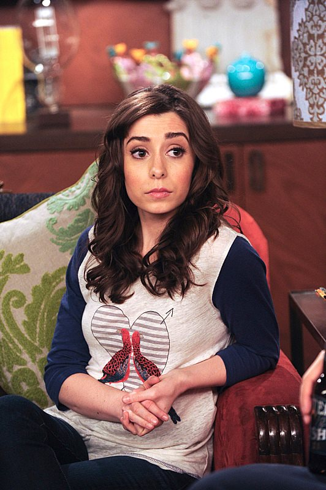

Tracy McConnell is the titular character of the series. She was the wife of Ted Mosby and The Mother of his children. She was a bass player and vocalist for an economics themed band called Superfreakonomics, which commonly played around New York in the 2010s.
Why we loved her:
She is the most loving mother and played out perfectly to the story in where she truly loves Ted. Everything that Ted was looking for was always so close, but he never saw Tracy before their official meeting. She truly loves Ted and was amazing to him.
Why we hate her:
Waited 8 seasons to finally see her, and she was killed off the show in less than a season.